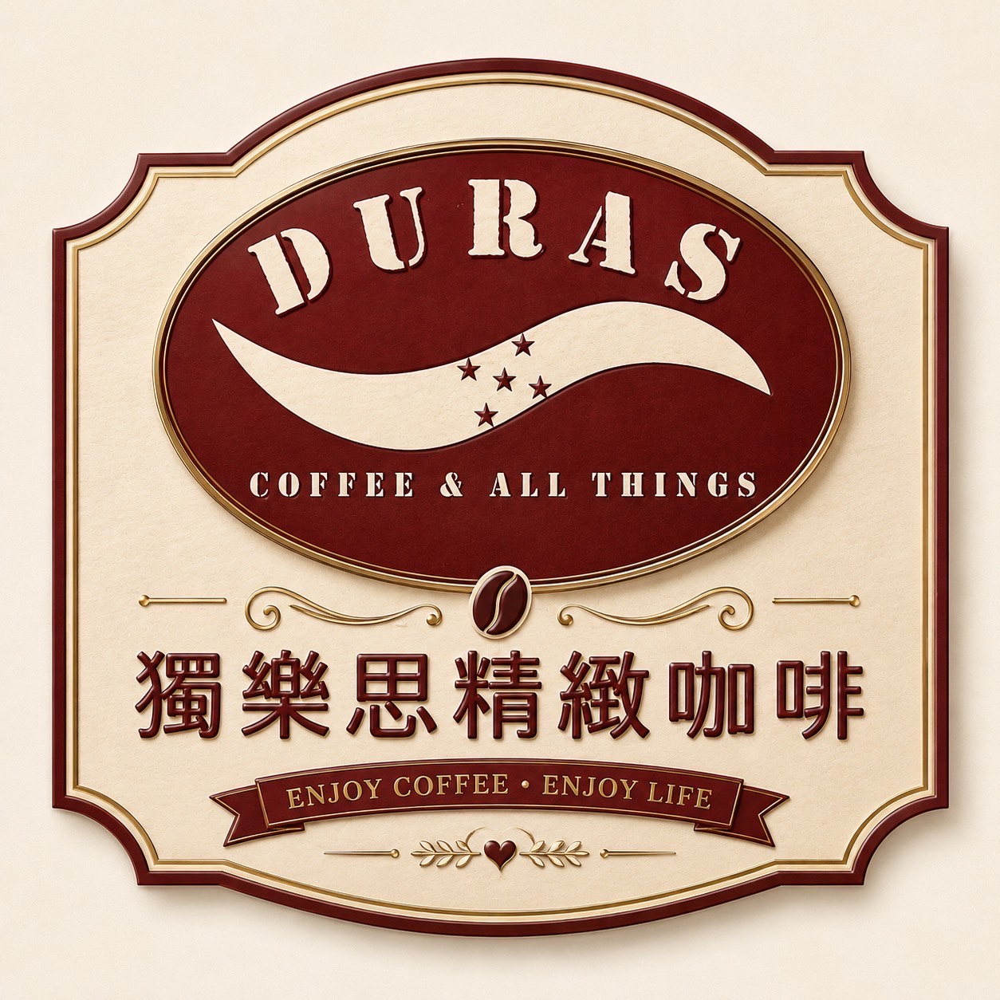

宏都拉斯花香・茶感
白花 · 佛手柑 · 楊桃
NT$800半磅 · 參考價
從產地的風土，到杯中的餘韻。
DURAS 陪你找到屬於自己的風味。

COFFEE & ALL THINGS不必熟悉每一個產區。
從你喜歡的味道開始。
從明亮花果，到醇厚尾韻。先認識這幾款。
白花 · 佛手柑 · 楊桃
花香 · 山竹 · 佛手柑
檸檬 · 萊姆 · 梅子
風味依原始豆單呈現。標籤為系列示意，實際規格與供應請洽詢。
 D / 03
D / 03我們用產地、品種與處理法，記錄咖啡的個性。花香、果韻、蜂蜜與堅果，每一個風味詞，都是邀請你親自探索的起點。
咖啡日常、選購與服務，在官方網站找到共同的入口。
官方帳號陸續籌備中。
所有平台，將在這裡匯聚。